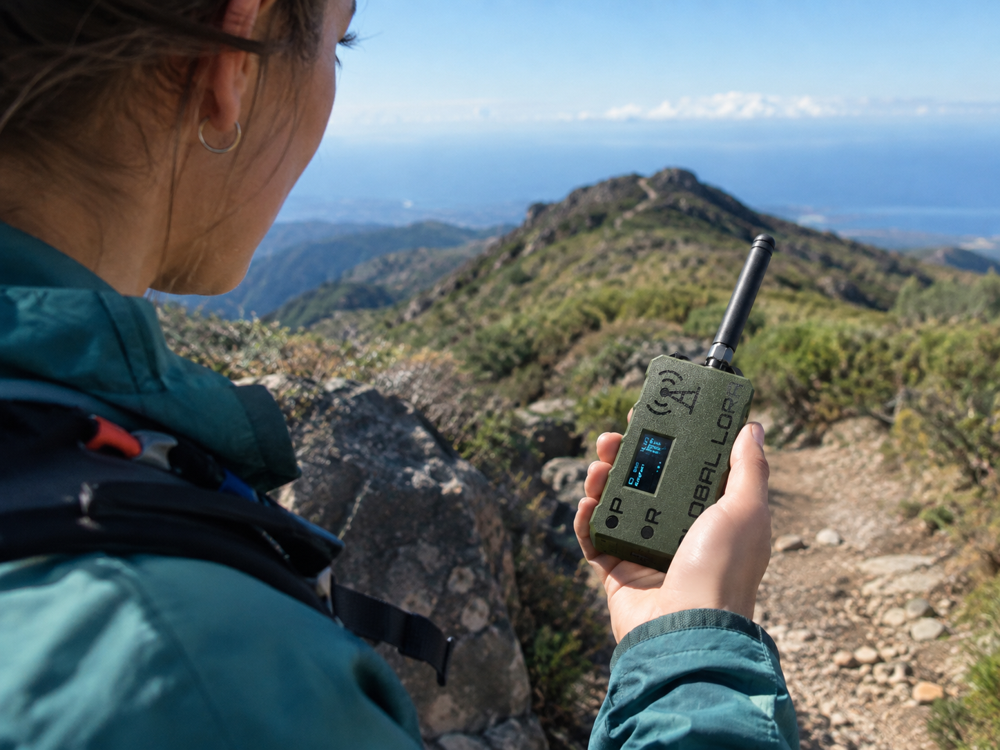

Volver al blog SeguridadMeshtastic en Canarias: Comunicación sin Cobertura en Rutas de Montaña
Estás en la Caldera de Taburiente, a cuatro horas del punto de partida, y tu móvil lleva sin cobertura desde que bajaste de Los Brecitos. Tu compañero se ha adelantado y no sabes si está esperándote en el cruce o ha seguido hacia el Roque. En Canarias esto pasa constantemente: los barrancos profundos, las caras norte y el interior de las islas son agujeros negros de cobertura.
Meshtastic es una respuesta a ese problema, y lo mejor es que no depende de ninguna operadora ni de pagar una cuota mensual.
Qué es Meshtastic exactamente
Meshtastic es un proyecto de código abierto que convierte pequeños dispositivos de radio LoRa en una red de mensajería descentralizada. Dicho en simple: son aparatos del tamaño de un mechero que se comunican entre sí por ondas de radio, sin necesidad de cobertura móvil, wifi ni satélite.
Cada dispositivo funciona como nodo de una red mesh. Si tú y tu compañero lleváis uno, podéis intercambiar mensajes de texto y posiciones GPS aunque estéis a kilómetros de distancia y sin una sola raya de cobertura. Y si hay un tercer senderista con otro nodo entre vosotros, su aparato retransmite automáticamente vuestros mensajes, ampliando el alcance sin que él tenga que hacer nada.
Por qué tiene sentido en Canarias
La orografía canaria es un caso de libro para esta tecnología. Las radios LoRa funcionan por línea de visión, y en las islas se dan condiciones muy favorables: desde una cumbre puedes tener visión directa a decenas de kilómetros. Se han documentado enlaces LoRa de más de 100 km entre picos con visión despejada.
Estas son las zonas donde más falta hace:
Caldera de Taburiente (La Palma)
Las paredes de la caldera bloquean casi toda la señal móvil. Una vez bajas de Los Brecitos hacia el río, estás incomunicado hasta que subes al otro lado.
Barranco de Masca y barrancos de Teno (Tenerife)
Barrancos profundos y estrechos con paredes de cientos de metros. La cobertura desaparece a los pocos minutos de empezar el descenso.
Barranco de Güigüi (Gran Canaria)
Una de las zonas más aisladas del archipiélago. Sin carreteras, sin cobertura y con rescates complicados.
Anaga interior (Tenerife)
El laberinto de barrancos de la laurisilva tiene zonas muertas incluso relativamente cerca de La Laguna.
El Hierro completo
Fuera de los núcleos, la cobertura es irregular y en muchos senderos de la vertiente sur simplemente no hay.
Qué equipo necesitas
Para empezar necesitas al menos dos dispositivos — uno solo no sirve de nada, ya que necesitas alguien con quien comunicarte. Estas son las opciones más habituales:
Heltec LoRa V3
25 – 35 €El más barato y compacto. Pantalla OLED integrada, pero sin GPS propio: toma la posición del móvil emparejado por Bluetooth.
- Pantalla OLED
- Sin GPS integrado
- Muy compacto
LilyGO T-Beam
35 – 50 €GPS propio y soporte para batería 18650. Funciona de forma autónoma sin depender del móvil, lo que en montaña marca la diferencia.
- GPS integrado
- Batería 18650
- Autonomía de días
RAK WisBlock
50 – 80 €Modular y más caro, pero con mejor consumo y opciones de carcasa estanca. Pensado para instalaciones fijas más que para llevar encima.
- Bajo consumo
- Carcasa estanca
- Modular
Configuración básica
La puesta en marcha es más sencilla de lo que parece. El flujo habitual es este:
Primero conectas el dispositivo por USB al ordenador y flasheas el firmware desde el instalador web oficial de Meshtastic, que funciona directamente desde Chrome sin instalar nada. Después instalas la app de Meshtastic en el móvil (disponible para Android e iOS) y emparejas el dispositivo por Bluetooth.
Dentro de la app configuras la región como EU_868, eliges un nombre para tu nodo y creas o te unes a un canal. El canal es lo que define tu grupo: todos los que compartan la misma clave del canal verán vuestros mensajes, así que para un grupo cerrado conviene crear uno propio con su clave.
Por último, activa el envío periódico de posición si quieres que tus compañeros vean dónde estás en el mapa de la app. Un intervalo de tres a cinco minutos es un buen equilibrio entre información útil y consumo de batería.
Qué NO es Meshtastic
Aquí conviene ser claro, porque hay bastante confusión con este tema y en montaña las expectativas equivocadas son peligrosas.
Meshtastic no llama al 112. No es un dispositivo de emergencia homologado. Si tienes un accidente grave y necesitas rescate, Meshtastic solo te sirve si hay alguien en tu red mesh que pueda recibir el mensaje y dar el aviso por otros medios.
Tampoco sustituye a un baliza satelital. Los dispositivos tipo Garmin inReach o SPOT usan satélites y funcionan en cualquier punto del planeta con cielo despejado, y tienen botón SOS conectado a centrales de rescate 24/7. Meshtastic es radio terrestre: si no hay otro nodo al alcance, no hay comunicación.
Y no garantiza cobertura. Depende de la línea de visión. En el fondo de un barranco con un nodo al otro lado de la montaña, no habrá enlace por mucho que el fabricante prometa 100 km.
Para quién merece la pena
Si haces rutas largas en grupo por zonas aisladas, la inversión de 60-100 € por dos dispositivos se amortiza el primer día que te separas del grupo y puedes decir "voy 20 minutos por detrás, seguid" sin tener que gritar por el barranco.
También tiene mucho sentido para clubes de montaña, empresas de guías que llevan grupos por Taburiente o Güigüi, y para quien hace travesías de varios días como el GR-131 o el GR-130.
Si sales solo y tu preocupación es la emergencia grave, la respuesta honesta es que necesitas una baliza satelital, no Meshtastic. Son herramientas para problemas distintos.
Cómo comprobar la cobertura real
Antes de comprar nada, merece la pena mirar si hay nodos activos cerca de las zonas por donde te mueves. Estos mapas muestran los nodos Meshtastic que están reportando posición en tiempo real:
La comunidad en Canarias
La red Meshtastic en Canarias está todavía en pañales comparada con Madrid o Barcelona, donde hay decenas de nodos fijos dando cobertura urbana. Aquí la mayoría de usuarios llevan sus nodos consigo en las salidas.
Eso significa que si te animas, probablemente estarás entre los primeros de tu isla. Y también que el valor real ahora mismo está en la comunicación dentro de tu propio grupo, no en depender de una red pública ya montada.
Si tienes un nodo activo en Canarias o has hecho pruebas de alcance entre islas o cumbres, escríbenos y lo recogemos: nos gustaría ir montando un mapa de cobertura real para senderistas del archipiélago.